畫過 / 擬古系列

＋ 作品資訊 ▼
印章文字：當頭上拂過藍的殘影／伴隨拔髮般的刺痛／他嚇得縮起脖子、吐出髒字／直到他發現葉叢間有一條黑白分明的尾羽／才知道這是傳說中的台灣藍鵲空襲／之後提起這件事／他總會說：討厭啦。


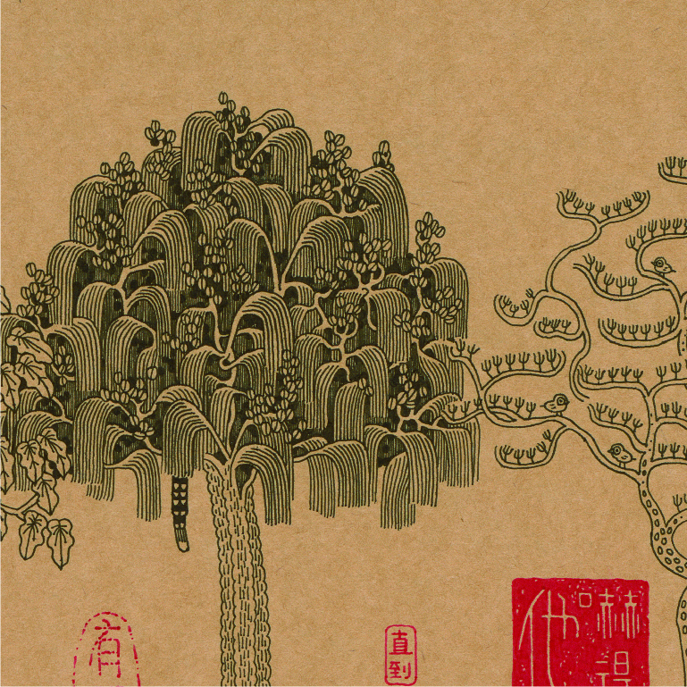
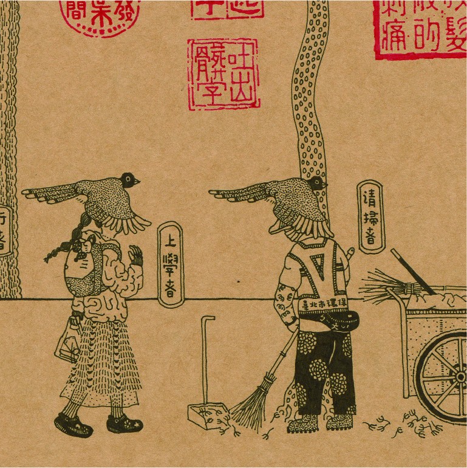

＋ 作品資訊 ▼
印章文字：沒有所謂的荒島書單／因為當你帶了一本書去荒島／那麼荒島就不是荒島了


＋ 作品資訊 ▼
印章文字：我有一個姐姐、兩個表姐、四個堂姐／家人稱之為七仙女／她們從領紅包變成包紅包的人／在婚禮與喪禮短暫相聚


＋ 作品資訊 ▼
印章文字：小時候讀七擒七縱的故事／發現要收服敵人太辛苦了／如果我遇到敵人／會有那麼多的才智與耐心來應對嗎
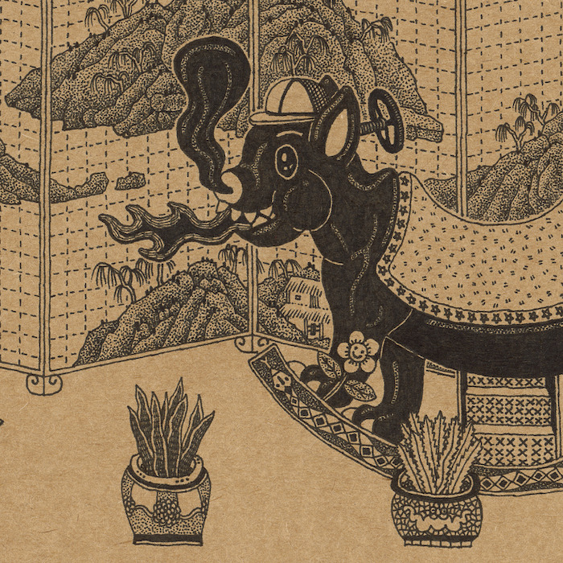
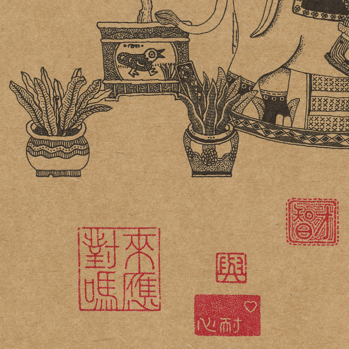
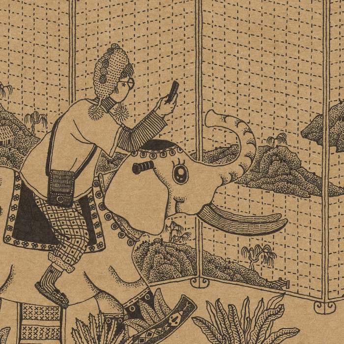
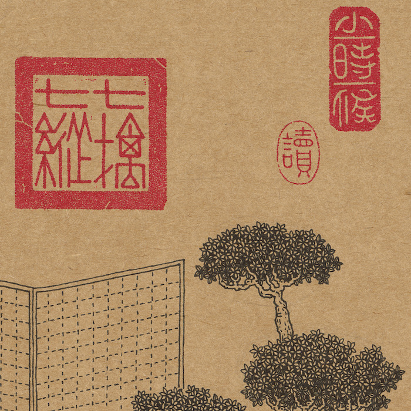

＋ 作品資訊 ▼
印章文字：往返書展的路上／我們的行李都裝著滿滿的書／錯錯覺閱讀的重量


＋ 作品資訊 ▼
印章文字：當天外傳來一句對你的超譯／你也許就不再是自己形象的主人了（陰刻）可怕的是／你所不存在的時空中／會有另一個你在和陌生人打交道（陽刻）


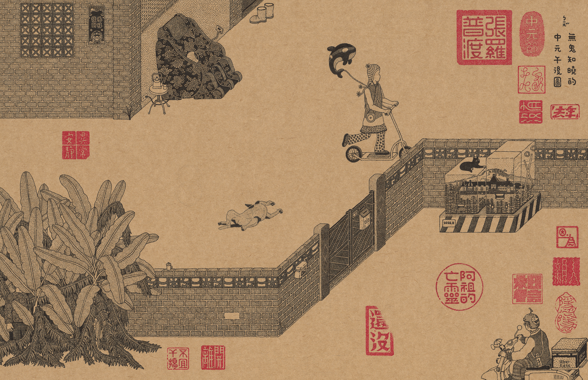
＋ 作品資訊 ▼
印章文字：去年中元節／老家沒有張羅普渡／異常安靜／因為親人隱隱相信阿祖的亡靈還沒離開／不宜干擾
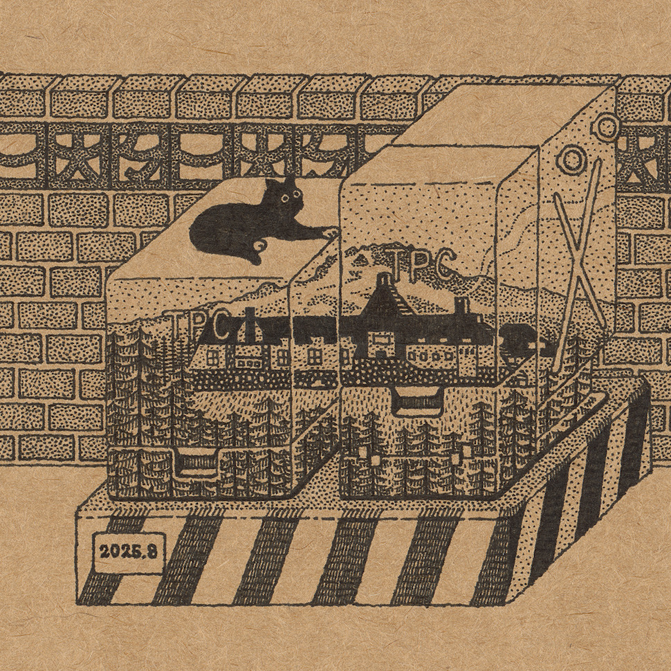
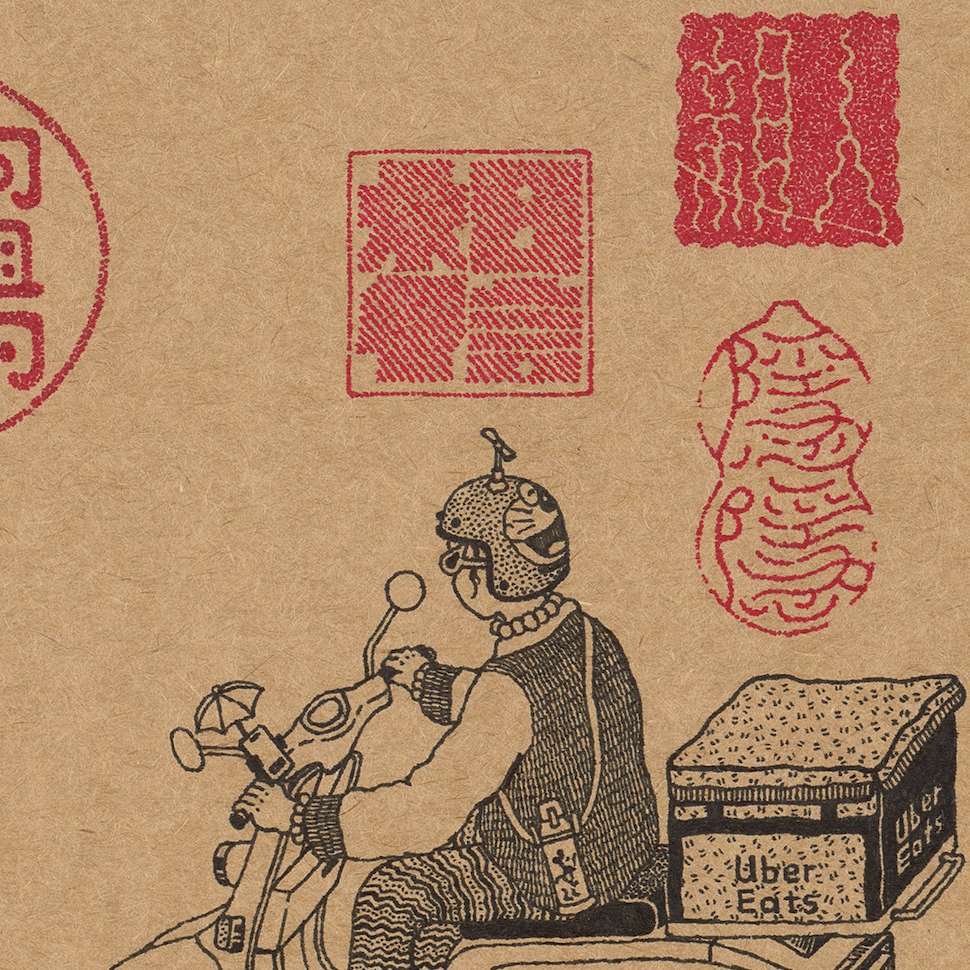
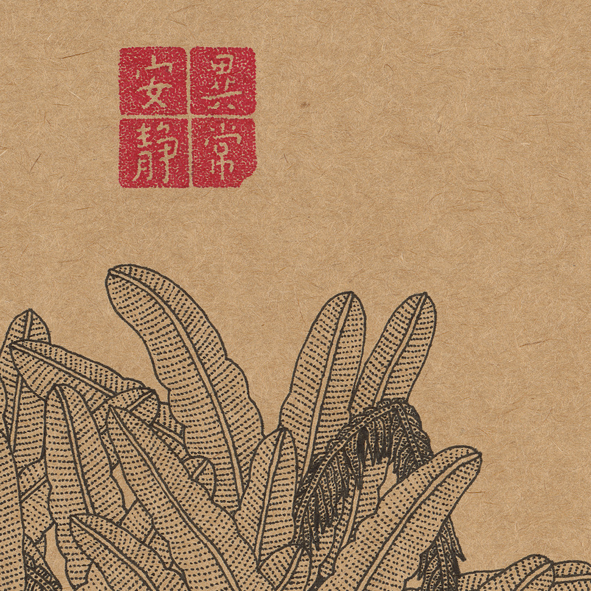
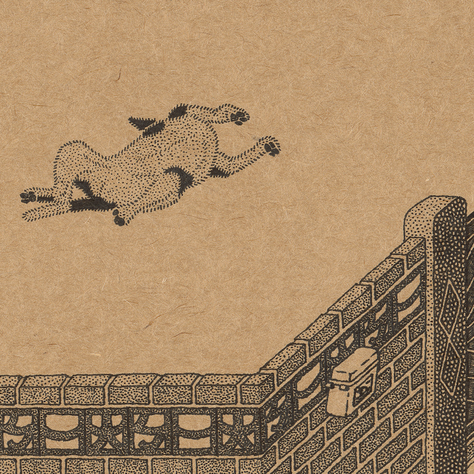

＋ 作品資訊 ▼
印章文字：巷口那家麵線攤失蹤了／傳說老闆欠債跑路（陽刻）成為吃不到卻永遠好吃的記憶（陰刻）


＋ 作品資訊 ▼
印章文字：巷口那家東山鴨頭從小攤變小店／感覺以前的比較好吃（陽刻）不知是二代目退步了／還是自己嘴刁了（陰刻）